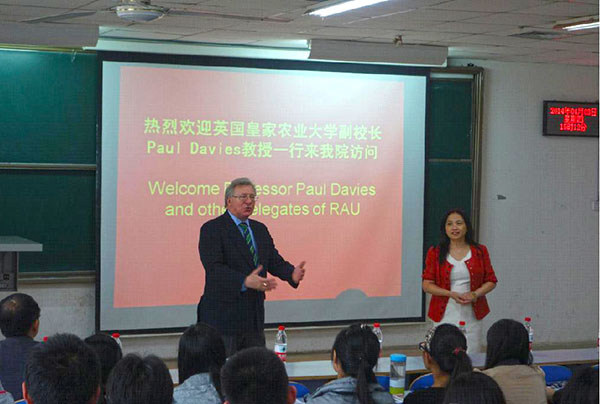
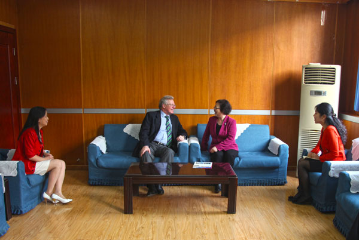

4月3日，英国皇家农业大学副校长保罗·戴维斯一行三人访问了我校，就两校有关合作项目进行接洽和交流。
党委副书记张胜利会见了保罗·戴维斯副校长。张胜利副书记对戴维斯副校长的再次来访表示欢迎，并简要回顾了两校友好合作的历程。双方就即将开展的本科生交流合作项目进行了深入交谈，希望今后能有更多的轻院学生可以赴皇家农业大学进行交流和深造，同时希望能在教师交流方面有突破性的合作。
来访期间，保罗·戴维斯副校长一行还专程前往科学校区参观考察，并为食品与生物工程学院的学生做了一场讲座。戴维斯副校长向学生介绍了皇家农业大学的基本概况和两校合作的本科生项目。同学们踊跃发言，就关心的问题与戴维斯副校长交流。
4月3日，英国皇家农业大学副校长保罗·戴维斯一行三人访问了我校，就两校有关合作项目进行接洽和交流。
2014月3日，英国皇家农业大学副校长保罗·戴维斯一行三人访问了我校，就两校有关合作项目进行接洽和交流。